模块系统
Table of Contents
NixOS 的配置文件是通过一个个可复用的模块实现的
之前说过一个 Nix 文件就可以是一个函数，可以在里面写任意表达式，求值这个 Nix 文件都会有输出
但是不是每一个 Nix 文件都是一个模块，因为模块对格式有特殊要求
工作原理
一个成熟的模块大概由三个部分组成： 导入 imports 、 选项 options 与 配置 config （或者叫做定义）。下面是个简单的示例，请将这三部分单独看待：
{
imports = [
# 这里导入其他模块
];
options = {
# 这里声明选项供其他模块设置
};
config = {
# 选项被激活以后进行的动作
};
}
先把 imports 数组撇一边去，先观察 options 与 config，两行注释还不足以诠释具体操作，直接上例子：
{ config, pkgs, ... }: # 这些参数由构建系统自动输入，你先别管
{
/*
我们开始在下面的 options 属性集中声明这个模块的选项了，
你可以将模块声明成你任意喜欢的名字，这里示例用 “myModule”，注意小驼峰规范。
同时请注意一件事，那就是模块名称只取决于现在你在 options 的命名，而不是该模块的文件名，
我们将模块命名与文件名一致也是出于直观？
*/
options = {
myModule.enable = mkOption {
type = types.bool; # 此选项的类型是布尔类型
default = false; # 默认情况下，此选项被禁用
description = "描述一下这个模块";
};
};
config = mkIf config.myModule.enable {
systemd.services.myService = { # 创建新的 systemd 服务
wantedBy = [ "multi-user.target" ]; # 此服务希望在多用户目标下启动
script = '' # 服务启动时运行此脚本
echo "Hello, NixOS!"
'';
};
};
}
在上面的代码中，通过向 mkOption 函数 传递 了一个 属性集 生成 了一个 布尔选项 ，下面的 mkIf 则 生成第一个参数为 true 才 执行 的动作
这些工具函数可以在函数库 https://nixos-cn.org/tutorials/lang/Utils.html 查询到
好的，现在办成了两件事，声明选项，以及定义了启用选项后会触发的动作
不知道你是否足够细心？注意到 mkIf 后面是 config.myModule.enable，即它是从参数 config 输入来的 不是在 options 里声明过这个选项了吗？为什么不直接通过 options.myModule.enable 来求值呢？
直接去求值 options.myModule.enable 是没有意义的，因为这个选项是 未经设置 的，这只会求值出它的 默认值
接下来就是 imports 的作用了，通过将一个模块导入到另一个模块，从而在 其他模块 设置 定义 被包含的模块的 options
- 被包含的模块只有 options 是对外部可见的 ，里面定义的函数与常量都是在本地作用域定义的，对其他文件不可见
被 imports 组织的模块集合中的任意模块都能访问任意模块的 options
也就是说，只要是被 imports 组织的模块，其 options 是全局可见的
构建系统会提取所有模块中的 options，然后求值所有模块中对 options 的定义：
{
imports = [
./myModule.nix
];
myModule.enable = true;
}

然后构建系统再将 所有的配置项 （即被定义后的 options） 求值 ，然后作为 参数 config 输入 到 每个模块 ，这就是每个模块通常要在第一行输入 config 的原因，然后下面的 config 会根据最终值触发一系列配置动作，从而达到求值模块以生成系统目的
如果一个模块没有任何声明，就直接开始定义（config）部分，注意不需要使用 config = {} 包装
因为这个模块不包含任何声明，只有定义。可以将这里的定义理解为一种无条件配置，因为没有使用 mkIf 之类的函数
常见输入
| 参数名 | 描述 |
| config | 所有 option 的最终值 |
| lib | nixpkgs 提供的库 |
| pkgs | nixpkgs 提供的包集合 |
| options | 所有模块声明的选项 |
| specialArgs | 特殊参数 |
| utils | 工具库 |
| modulesPath | 模块路径 |
组织方案
由于 options 是全局可见的，所以需要一种规范组织模块，区分模块的声明与定义部分，不然一切都会被搞砸的 并且尽量不要在零散的地方定义其他模块的 options，这样会让模块的维护异常困难，还可能触发难以想象的副作用
尽量只让模块声明属于自己职能的部分，一个模块只完成它应该干的一件事。举个简单的例子，现在有两个模块，对于 a.nix ，将它放到 services 文件夹下。可以注意下面 模块名 ，这表示了 从属 关系：
{ config, lib, pkgs, ... }:
{
options.services.a = {
enable = lib.mkEnableOption "service a";
};
config = lib.mkIf config.services.a.enable {
# 模块 a 的实现
};
}
如果 b.nix 这么写：
{ config, lib, pkgs, ... }:
{
imports = [ ./services/a.nix ]; # 导入模块 a
options.b = {
enable = lib.mkEnableOption "service b";
};
config = lib.mkIf config.b.enable {
services.a.enable = true; # 不要这么做
# 模块 b 的实现
};
}
b 模块不能这样写 。因为如果定义了 b.enable = true，会带来了 services.a.enable = true 的 副作用 ，而模块自治的写法：
- 删掉 b 模块中启用 a option 的语句
在更加顶层的一个中心文件完成所有模块的 options 的定义：
{ config, lib, pkgs, ... }: { imports = [ ./a.nix ./b.nix ]; # 导入模块 a 和 b services.a.enable = true; # 在系统配置中启用模块 a b.enable = true; # 在系统配置中启用模块 b }在上面的文件上定义这些 options ，正如我们在 /etc/nixos/configuration.nix 所做的一致
综上，应该使用 无副作用 的组合来组织模块，并在 统一的模块 中定义 所有模块的 options
默认导入
在平时修改 /etc/nixos/configuration.nix 时，发现能定义一些 不存在 的模块的 options，它们并不是不存在，而是被 默认 导入了，可以点击 这里 查看默认导入的模块列表
如何找到options
安装系统的时候，也仅仅是将教程上的 options 抄下来或者根据已有的模板微调就形成了基本的配置 但是该从何处才能查询到 NixOS 提供的更多 Options 呢？
答案是官方提供里的 Options 检索工具，这个工具是官方在维护